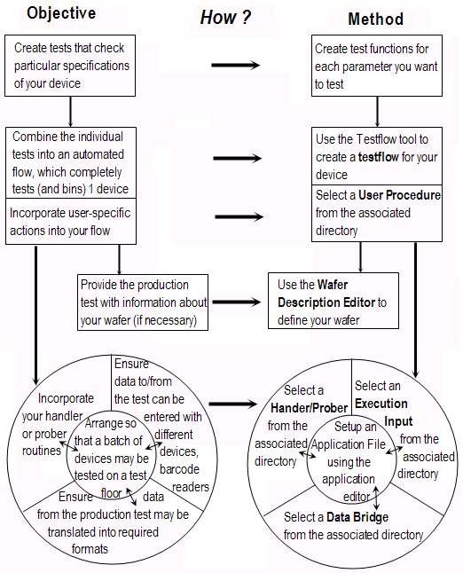

A Suggested Test Program Methodology
The following method is just one way of creating your test program. It is split into defining all device-related information, followed by all testfloor-related information. Some of the steps, however, may not be relevant (for example, if you use a package handler the wafer description screen does not apply). You must decide which steps are relevant for you and set them up appropriately.
The method for creating a test program for multi-site testing is slightly different, although the principle steps are the same.
- Create your Testflow. (See Inserting a test suite in the
testflow)
- Place tests with a high fault coverage early in your testflow
- Place time-consuming tests later in your testflow
- Define your Wafer (see Wafer Description Tool)
- Wafer orientation
- Wafer coordination
- Number of die on your wafer
- Stepping pattern
- Prober setup-command file
- Select your Application and define the application data in the Application Data Editor Input window.
- Select the Handler/Prober File from the appropriate library (see Selecting a Handler/Prober Command Set)
- Select an Execution Input file as required (see Selecting an Execution Input)
These might be, for example:
- Optical character recognition
- Barcode reader
- Select the Data Bridge (see Selecting a Data Bridge)
The figure below suggests a way to set up a test program.
